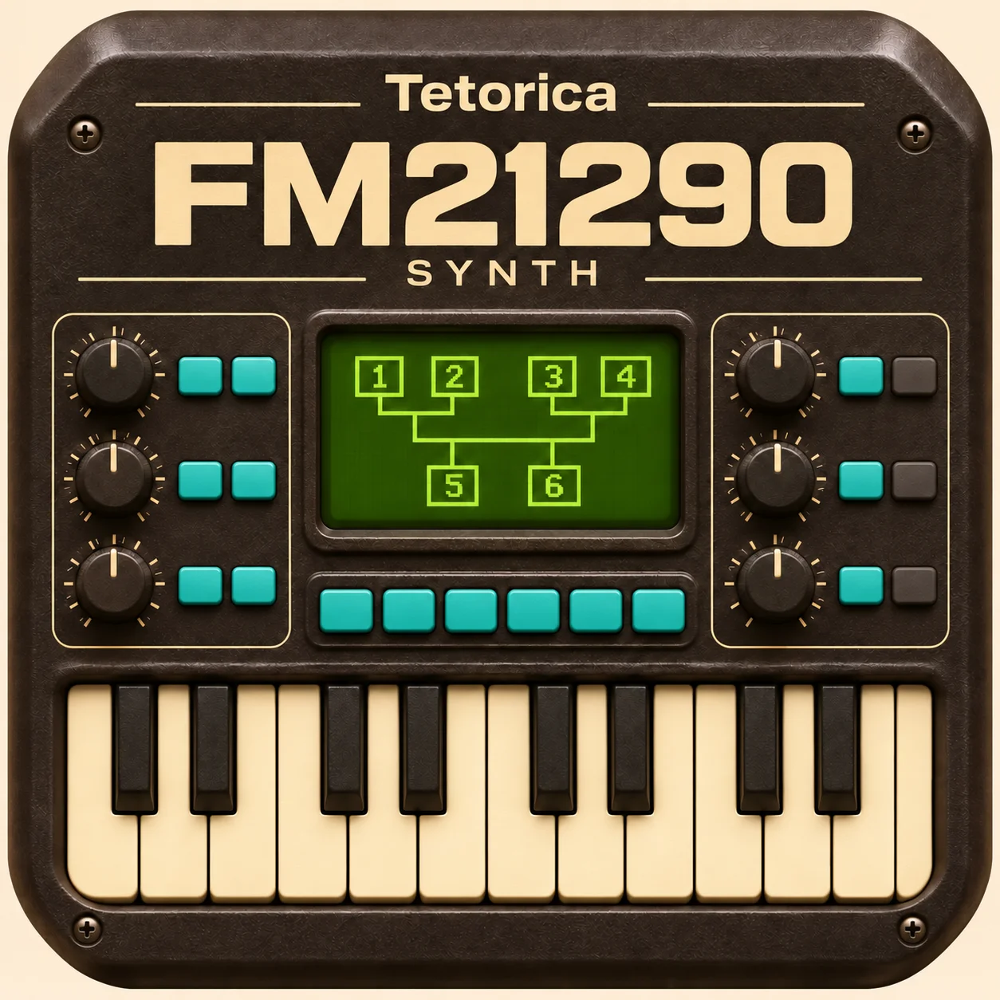

This replaces the current local project. Export it first to keep a copy.
Opening local project…
Select an OP. Drag a point up for more level, left for a faster rate. Arrow keys adjust by one.
AM / PM high / PM low (hex)